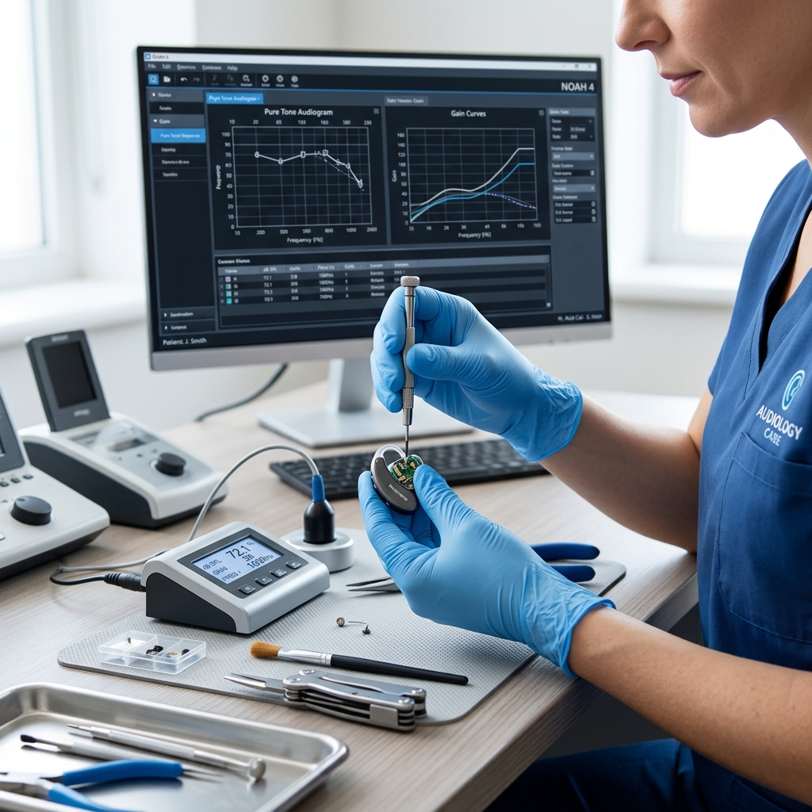

Calibración, Ajuste y Mantención de Audífonos
Optimiza el rendimiento de tus audífonos con software clínico especializado en Viña del Mar.
¿Por qué es importante calibrar tus audífonos?
Con el tiempo, tu audición puede cambiar y los audífonos requieren ajustes para mantener un rendimiento óptimo. Una calibración profesional asegura que tu dispositivo esté configurado de acuerdo a tus necesidades auditivas actuales, maximizando la claridad del sonido y tu comodidad.

Nuestros servicios de mantención
- Calibración y ajuste: Reprogramación del dispositivo mediante software clínico según tu audiometría actualizada
- Limpieza profunda: Limpieza especializada de componentes internos y externos
- Cambio de filtros y accesorios: Reemplazo de filtros de cerumen, tubos y domes según sea necesario
- Evaluación de funcionamiento: Verificación del rendimiento electroacústico del dispositivo
- Seguimiento auditivo: Audiometría de control para comparar con resultados anteriores
Atención multimarca
En BeopenSound podemos evaluar la factibilidad de calibrar audífonos de diferentes fabricantes, no solamente de las marcas que vendemos. Si tienes un audífono de otra marca y necesitas ajustes o mantención, consúltanos para verificar la compatibilidad de tu modelo.
¿Cuándo deberías calibrar tus audífonos?
- Cuando sientes que el sonido ya no es tan claro como antes
- Después de un cambio significativo en tu audición
- Cuando el fonoaudiólogo lo indique según tu plan de seguimiento
- Cuando el dispositivo presenta comportamientos inusuales (pitidos, ruidos)
- Ante cambios en tus actividades cotidianas (nuevo trabajo, más reuniones, etc.)
Preguntas frecuentes sobre calibración
¿Se pueden calibrar audífonos de otra marca?
Sí, en BeopenSound ofrecemos servicio multimarca. Podemos evaluar la factibilidad de calibrar y ajustar audífonos de diferentes fabricantes. Te recomendamos consultar previamente para confirmar la compatibilidad de tu modelo específico.
¿Cada cuánto tiempo se deben calibrar los audífonos?
La frecuencia de los controles depende de las necesidades de cada persona, del uso del equipo y de la evolución auditiva. Es recomendable consultar cuando se perciben cambios en la audición o en el funcionamiento del audífono.
¿Qué incluye la mantención de audífonos?
La mantención puede incluir limpieza profunda del dispositivo, revisión de componentes, cambio de filtros, ajuste de programación y evaluación de funcionamiento general.
¿Tus audífonos necesitan ajuste?
Consulta por la calibración y mantención de tus audífonos con nuestro equipo en Viña del Mar.
Consultar por calibración